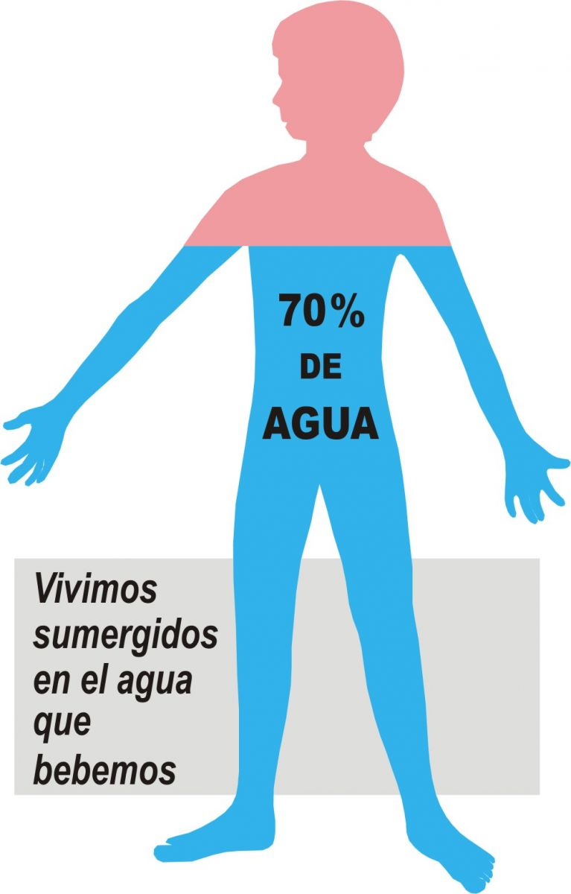

<ion-view view-title="BioApp">
  <ion-content class="padding">
    <!--links -->
    <link rel="stylesheet" href="../css/Principal.css">

    <!--code of video-->

    <video  loop="loop"  id="video_background" preload="auto" volume="50"class="video">
      <source src="../resource/bioappPrincipal.mp4" type="video/mp4">
    </video>

        <!--this code information-->
    <h1 class="styh1">BioApp</h1>
    <p class="styp">"La mente humana evolucionó para creer en los dioses. No evolucionó para creer en la biología. (Edward O. Wilson)"</p>
    
    <div class="stydiv">
      <a href="https://es.wikipedia.org/wiki/Biología" class="stya">Biologia Wikipedia.</a>
    </div>
   
    <!--ilustration of biology-->

    <div class="row">
      <div class="col-100" ng-controller="DashCtrl">
        <ul ng-repeat="x in juegos">
          <li><h2 class="styh2" >{{x.nombre}}</h2></li>
          <li><a href="{{x.link}}"></a></li>
        </ul>
      </div>
    </div>


  <div class="container cont1">
    <div class="row">
      <div class="col-100">
        <h1 class="styh11">Importancia del Agua.</h1>
        <p class="stypp text-center">El agua es el elemento más importante para la vida. Es de una importancia vital para el ser humano, así como para el resto de animales y seres vivos que nos acompañan en el planeta Tierra.

        Resulta curioso que el 70 por ciento de la Tierra sea agua y que el 70 por ciento de nuestro cuerpo también sea agua. Quizás sea por eso que lo recomendable para tener una dieta saludable y una larga vida sea el comer alimentos con un porcentaje del 70 por ciento en agua.</p>
      </div>  
    </div>  
    <div class="row">
      <div class="col-100">
        <video  loop="loop" controls id="video_background" preload="auto" volume="50"class="video">
          <source src="../resource/bioappPrincipal.mp4" type="video/mp4">
        </video>
      </div>
    </div>
    <div class="row">
      <div class="col-100">
        <h1 class="sth11">La importancia del agua en el organismo</h1>
        <p class="sp">Todos nosotros conocemos la importancia del agua en el organismo. Todas las actividades que una persona hace en su vida cotidiana están de una manera u otra relacionadas con el agua. Sabemos que alrededor del 75% de la tierra es agua en forma de océanos, lagos, ríos, glaciares, etc. Nuestro cuerpo está hecho principalmente de agua, y esta juega un papel muy importante en nuestra salud física.</p>
      </div>
    </div>
    <div class="row">
      <div class="col-100 " >
                
     </div>
    </div>
    <div class="row">
      <div class="col-100">
        <h1 class="sth11">La importancia del agua fuera del organirmo. Importancia del agua para el planeta y el ser humano
        </h1>
        <p class="sp">La Asociación Mundial para el Agua (GWP, por sus siglas en inglés) es una red internacional abierta a todas las organizaciones involucradas en la gestión sostenible de los recursos hídricos. Para este organismo trabaja Gustaf Olsson, uno de los mayores expertos mundiales en usos y gestión del agua, que ha publicado el estudio Water and energy. Existen, según el experto, graves contradicciones en el empleo del agua.

        Un dato demuestra la importancia del agua en nuestra vida: un 60% del cuerpo humano de un adulto es agua. En un bebé, el porcentaje es mayor, hasta un 75%. En el planeta, un 97% del agua está en mares y océanos. Sólo un 3% es, por tanto, agua dulce. De ésta, el 69% está congelada en casquetes polares y glaciares y otro 30% bajo tierra. Así, sólo el 1% de agua dulce está disponible en la superficie. Sigue leyendo este artículo de EcologíaVerde y te hablaremos sobre la importancia del agua para el planeta y el ser humano</p>
      </div>
    </div>
    <div class="row">
      <div class="col-100 " >
                
     </div>
    </div>
    <div class="row">
      <div class="col-100">
        <video  loop="loop"  id="video_background" controls preload="auto" volume="50"class="video">
          <source src="../resource/agua2.mp4" type="video/mp4">
        </video>        
      </div>
    </div>
  </div>


  <div class="container">
    <div class="row">
      <div class="col-100">
        <h1 class="sth11">El Adn</h1>
        <p class="sp">El ácido desoxirribonucleico, abreviado como ADN, siempre es un ácido nucleico que contiene las instrucciones genéticas usadas en el desarrollo y funcionamiento de todos los organismos vivos y algunos virus; también es responsable de la transmisión hereditaria. La función principal de la molécula de ADN es el almacenamiento a largo plazo de información para construir otros componentes de las células, como las proteínas y las moléculas de ARN. Los segmentos de ADN que llevan esta información genética son llamados genes, pero las otras secuencias de ADN tienen propósitos estructurales o toman parte en la regulación del uso de esta información genética.</p>
      </div>
    </div> 
    <div class="row">
      <div class="col-100">
        <h1 class="sth11">Historia</h1>
        <p class="sp">El ADN fue aislado por primera vez durante el invierno de 1869 por el médico suizo Friedrich Miescher mientras trabajaba en la Universidad de Tubinga. Miescher realizaba experimentos acerca de la composición química del pus de vendas quirúrgicas desechadas cuando notó un precipitado de una sustancia desconocida que caracterizó químicamente más tarde.2​3​ Lo llamó nucleína, debido a que lo había extraído a partir de núcleos celulares.4​ Se necesitaron casi 70 años de investigación para poder identificar los componentes y la estructura de los ácidos nucleicos.</p>

        <p class="sp">En 1919 Phoebus Levene identificó que un nucleótido está formado por una base nitrogenada, un azúcar y un fosfato.5​ Levene sugirió que el ADN generaba una estructura con forma de solenoide (muelle) con unidades de nucleótidos unidos a través de los grupos fosfato. En 1930 Levene y su maestro Albrecht Kossel probaron que la nucleína de Miescher es un ácido desoxirribonucleico (ADN) formado por cuatro bases nitrogenadas (citosina (C), timina (T), adenina (A) y guanina (G), el azúcar desoxirribosa y un grupo fosfato, y que, en su estructura básica, el nucleótido está compuesto por un azúcar unido a la base y al fosfato. </br>    
        <br>Sin embargo, Levene pensaba que la cadena era corta y que las bases se repetían en un orden fijo. En 1937 William Astbury produjo el primer patrón de difracción de rayos X que mostraba que el ADN tenía una estructura regular.7​</p>
      </div>
    </div>   


<!--codigo de adn virtual-->
    
    <div class="row rolla" style="background:white" >
      <div class="col-100" id="stage">
        <div id="spinner" style="text-align: center; color: #fff;">
          <h1><span class="blue">1</span><span>_____________ </span><span class="pink">1</span></h1>

          <h1><span class="blue">2</span><span>_____________ </span><span class="pink">2</span></h1>

          <h1><span class="blue">3</span><span>_____________ </span><span class="pink">3</span></h1>
          <h1><span class="blue">4</span><span>_____________ </span><span class="pink">4</span></h1>

          <h1><span class="blue">4</span><span>_____________ </span><span class="pink">5</span></h1>

          <h1><span class="blue">6</span><span>_____________ </span><span class="pink">6</span></h1>
          <h1><span class="blue">7</span><span>_____________ </span><span class="pink">7</span></h1>

          <h1><span class="blue">8</span><span>_____________ </span><span class="pink">8</span></h1>

          <h1><span class="blue">9</span><span>_____________ </span><span class="pink">9</span></h1>

      </div>
    </div>

  </div>


    <!--linia de informacion local-->

    <div class="row frac1">
      <div class="col-100 frac" >
        <div class="linea1">
          <h1 class="sth1">Developers: </h1>
          <h3>Gerson Boche. </h3>
          <h3>Seiddy Roca. </h3>
          <h3>Ricardo Perez.</h3>
        </div>
        <div class="linea2">
          <h1 class="sth1">Designers:</h1>
          <h3>Jennifer Enriquez.</h3>
          <h3>César Tello.</h3>
          <h3>Andrea Sagche.</h3>
        </div>
        <div class="linea3">
          <h1 class="sth1">Links: </h1>
          <h3>VIRTUALPROGRAMS</h3>
          <h3>@VIRTUAL_PROGRAMS</h3>
          <h3>VIRTUAL_PROGRAMS</h3>
        </div>
        <div class="linea4">
          <h1 class="sth1">Contáctanos:</h1>     
          <h3>VirtualProgramsGT@gmail.com</h3>
          <h3>5880-9232</h3>
          <h3>5384-3408S</h3>
        </div>
      </div>
    </div>
    <!--linia de informacion-->
    <div class="row frac2">
      <div class="col-50">
        <h5>Virtual Programs Developers All right reserved.</h5>
      </div>
      <div class="col-50 text-center">
        <a href="#" class="enlace"><p><i class="icon1 icon ion-social-facebook"></i>Facebook</p></a>
        <a href="#" class="enlace"><p><i class="icon1 icon ion-social-twitter"></i>Twiter</p></a>
        <a href="#" class="enlace"><p><i class="icon1 icon ion-social-instagram"></i>Instragram</p></a>
      </div>
    </div>


  </ion-content>
</ion-view>
